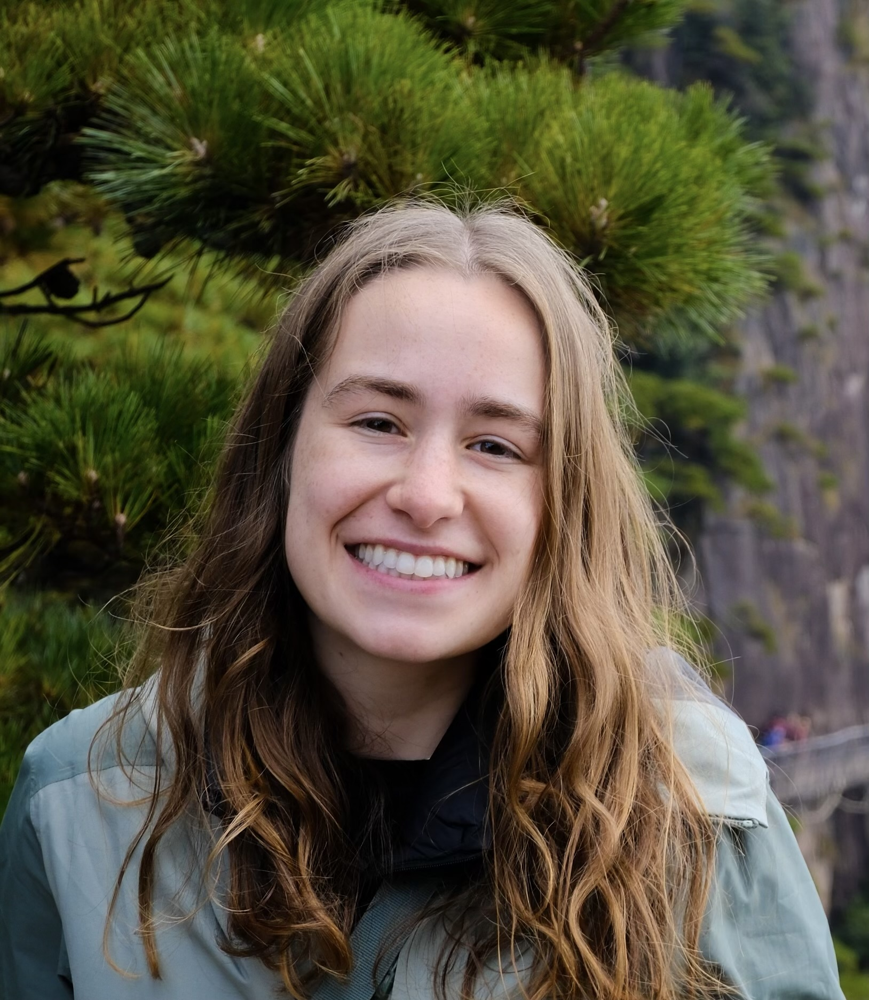

PhD Student, Johns Hopkins University
I am currently a 3rd year PhD student at the Center for Language and Speech Processing (CLSP) at Johns Hopkins University, co-advised by Mark Dredze and Will Walden. Previously, I received my bachelor’s degree in computer science and math (double major) from the University of Virginia, where I spent some time researching kelp ecology. My research interests are in natural language processing, particularly improving fact verification of machine generated text. More broadly, I’m interested in improving the grounding, transparency, and trustworthiness of LLM evaluation systems.

2026
2025
2024
2022
My CV can be found here.